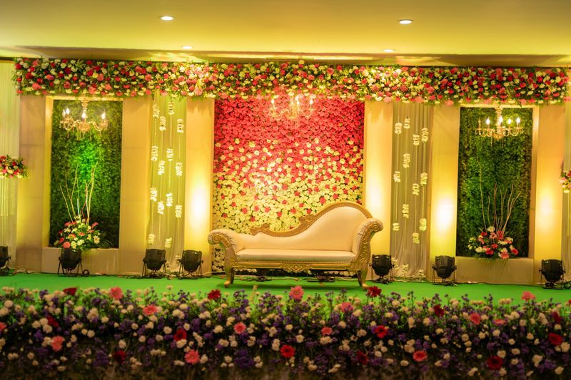
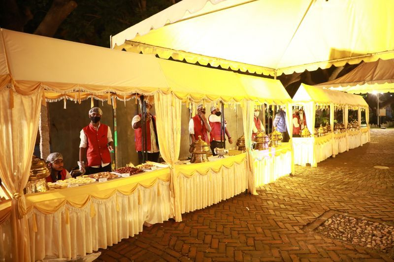
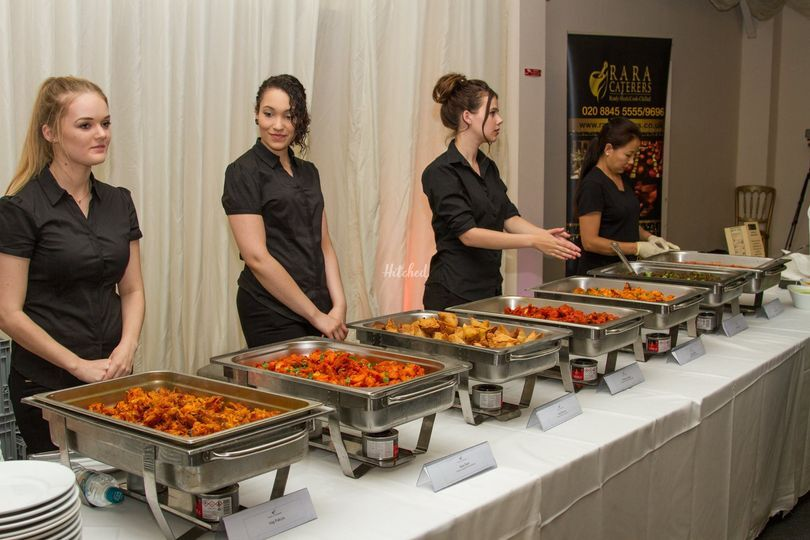

The catering service was started by Friends of family, a fifth-generation cook, who came to Chennai as a 14-year-old and evolved to become one of the most sought-after caterers. Our focus on a traditional set menu that’s high on flavor and taste can well be termed as the USP of ACS Thaligai.
Attention to every little detail and our highly dedicated staff help us realize our motto and serve you to your utmost satisfaction and contentment.
OUR OFFERINGS Primarily established as expert wedding caterers and wedding service providers, we also offer catering services for various celebratory occasions and outdoor events. We also prepare and deliver high quality authentic sweets and savories based on orders. Our handcrafted festive delicacies are also made to order and shipped overseas.